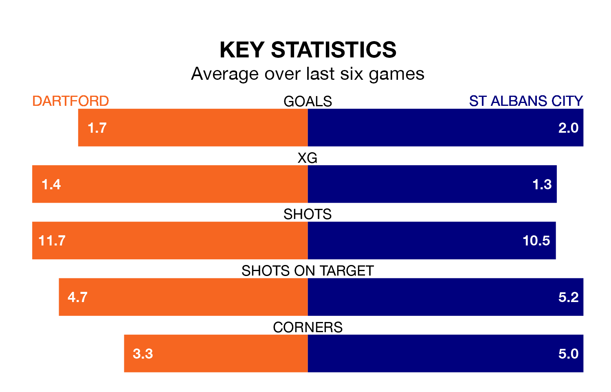

Dartford host St Albans City in Saturday's match at Princes Park looking to bounce back from defeat last time out in National League North and South.
The Darts, who sit zero in the league after 22 games, fell to a 4-0 away defeat to Tonbridge Angels on December 16.
They face a St Albans side who picked up a win in their last match, a 2-1 victory against Chelmsford City, and who sit zero in the table.
With 35 goals in 22 games so far this season, Dartford are scoring more than average in the league with 1.6 goals per game. But they are conceding more than average too, letting in 33 goals at a rate of 1.5 per game.
St Albans are also above average scorers, with 1.5 goals per game, compared to a league average of 1.4. They have conceded 1.7 goals per game.
In the last five years, Dartford and St Albans have played each other on 10 occasions. Dartford won five of them, St Albans two, and they drew three times.
On average, the Darts scored 1.6 goals and St Albans 1.1 in those matches.
Their last meeting was on September 9, when St Albans won 1-0 at home.
The Darts are in mixed form in National League North and South, with two wins and a draw from their last six games.
And also with two wins and a draw over that period, City's form is identical – they have both taken seven points from 18.
